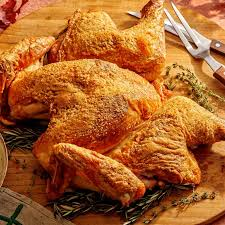

Parmesan Foast Turkey

Ingredients
- 1 stick (8 tablespoons) unsalted butter, at room temperature
- 2 teaspoons minced fresh rosemary
- 2 teaspoons minced fresh thyme
- 2 cloves garlic, minced
- Finely grated zest of 1 lemon
- 1 1/2 cups grated Parmesan (about 6 ounces)
- Kosher salt and freshly ground black pepper
- One 10- to 12-pound turkey, spatchcocked by your butcher
- 2 tablespoons extra-virgin olive oil
Instructions
- Position an oven rack in the center of the oven and preheat to 375 degrees F. Fit a wire rack inside of a rimmed baking sheet; set aside.
- Combine the butter, rosemary, thyme, garlic, lemon zest, 1/2 cup of the Parmesan, 1 teaspoon salt and several grinds of pepper in a medium bowl until smooth.
- Pat the turkey dry, then season all over (both the underside/flesh and skin) with 1 tablespoon salt and several grinds of pepper. Place skin-side up on the prepared baking sheet.
- Work your fingers between the skin and meat on the breast and top of the turkey legs to loosen, then rub the Parmesan-butter evenly under the skin. Rub the olive oil all over the skin, then sprinkle with the remaining 1 cup Parmesan.
- Roast until the Parmesan is golden brown and an instant-read thermometer inserted into a thigh reaches 165 degrees F, 1 1/2 to 2 hours. Let rest for 30 minutes before carving.